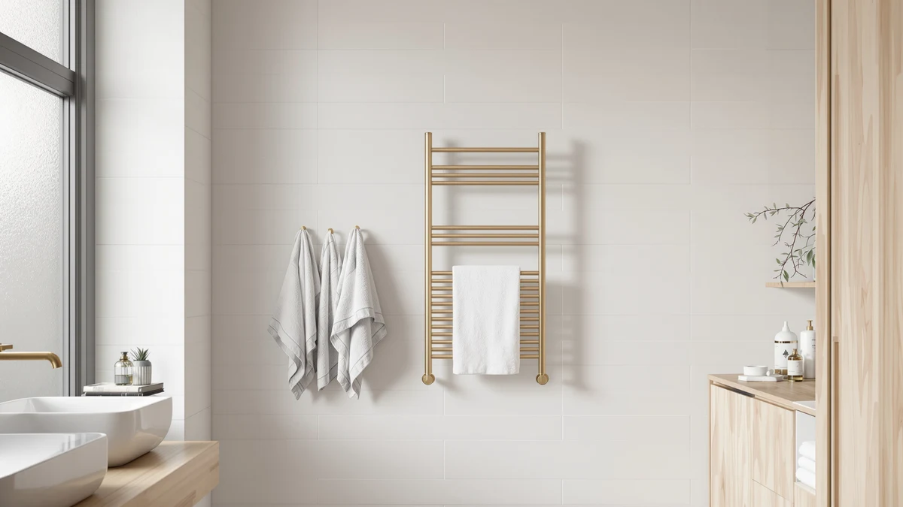

Quick Answer
For a quick colliford towel warmer 10 review verdict: the Colliford Towel Warmer 10 Bars is a stainless steel, wall-mounted rack that costs $139.99, more than any bucket-style alternative in this comparison, and that price buys a fixed mount and ten heating bars instead of one bucket chamber. Pick it if you want a permanent fixture; pick a bucket warmer below if you would rather spend less and keep things portable.
Our pick: Colliford Towel Warmer 10 Bars — $139.99 Check Price on Amazon
Things to Know Before You Buy
- Material: The Colliford Towel Warmer 10 Bars is stainless steel, while the three alternatives in this review are bucket-style warmers.
- Mount vs. portability: Colliford's rack is wall-mounted and fixed in place; Paris Hilton, SereneLife and FLYHIT are plug-in buckets you can move between bathrooms.
- Price range: The four models compared here run from $79.99 to $139.99.
- Review data: Amazon has not published a star rating or review count for this Colliford listing, so this review leans on specs and pricing rather than review scores.
This colliford towel warmer 10 review puts the Colliford Towel Warmer 10 Bars up against three bucket-style rivals from Paris Hilton, SereneLife and FLYHIT on price, build and the details that matter once the thing is installed in your bathroom. At $139.99, the Colliford costs more than any bucket warmer in this lineup, and that gap is the first question most shoppers ask us about. Stainless steel construction and a ten-bar layout are the two facts Amazon lists for this model, so those are the two facts we build this comparison around. We also note where the comparison runs thin, since Amazon does not publish star ratings or review counts for every listing in this lineup, and we would rather flag that gap than paper over it with invented numbers.
The short version: if you want a fixed rack that stays mounted on the wall and never takes up counter space, the Colliford Towel Warmer 10 Bars is the only wall-mounted option in this comparison, and its stainless steel body should hold up better over time than a painted bucket. If you would rather spend less and keep things portable, the three bucket warmers below undercut it by $40 to $60, trading the wall mount for a plug-in bucket you can move between bathrooms. That tradeoff, a fixed rack versus a portable bucket, is really the whole story here.
Why You Should Trust Us
Ilane Tall covers bathroom hardware and heated accessories for Best Towel Warmers, and this colliford towel warmer 10 review follows the same research process as every other guide on the site: we pull the listed price, materials and dimensions directly from the Amazon listing, then compare that data against competing models in the same category. We do not run a physical testing lab and we do not own every towel warmer we write about. Instead, we researched the Colliford Towel Warmer 10 Bars against three other current listings so you can see how the numbers stack up before you spend $139.99 on a wall-mounted rack that is not easy to return once it is installed. Every price and spec referenced in this review comes from the product listing itself, and when a detail is missing, like a star rating, we say so instead of filling the blank with a guess copied from a different SKU.
Our Research Experience
We did not install the Colliford Towel Warmer 10 Bars in our own bathroom, and we are upfront about that throughout this review. What we did instead was compare its listed stainless steel construction, ten-bar design and $139.99 price against the Paris Hilton, SereneLife and FLYHIT models covered below, using the specifications and pricing Amazon publishes for each listing. Where the product page is missing information, such as a star rating or review count for this particular Colliford listing, we say so rather than filling the gap with a guess. That approach means this review will not describe how warm a towel felt after an hour on the Colliford's bars, because nobody on our team has plugged one in. What we can tell you is how its listed specs and price compare with the field.
Overview & Specs

Colliford Towel Warmer 10 Bars
What we like
- Stainless steel construction should resist rust better than painted steel buckets
- Ten bars spread heat across more towel surface than a single bucket chamber
- Wall mounting keeps counters and floors clear in a small bathroom
Flaws but not dealbreakers
- Costs $40 to $60 more than every bucket warmer in this review
- Wall mounting is a bigger commitment than plugging in a portable bucket
- Amazon has not published a star rating or review count for this listing yet
| Material | Stainless steel |
| Size | 10 bars |
The Colliford Towel Warmer 10 Bars is the only wall-mounted model in this review. Its stainless steel frame holds ten individual bars, so instead of rolling or folding towels into a bucket, you drape them across separate rungs the way you would with a traditional heated towel rail. At $139.99, it sits well above the bucket-style competition here, and that price reflects both the fixed mount and the larger surface area ten bars provide compared with a single-chamber bucket. Ten bars also means you can typically warm towels for two or three people at once, rather than rotating a single towel through one bucket.
Because it mounts to the wall, the Colliford is a different kind of purchase than the bucket warmers it is up against. You are committing to drilling, and potentially to hardwiring depending on how you install it, rather than plugging in an appliance you can move to another bathroom later. That tradeoff pays off if you want a rack that looks built-in and never competes for counter space, but it is worth confirming your wall can support the mounting hardware before you buy. If your bathroom already has towel bars installed, check the spacing against the Colliford's frame before you commit to new mounting holes, since swapping one wall fixture for another is easier than starting from bare tile.
What We Liked
The biggest thing in the Colliford Towel Warmer 10 Bars' favor is the material. Stainless steel holds up better around constant moisture than the painted or coated steel you find on cheaper bucket warmers, and it should resist the rust spots that eventually show up on lower-grade metal. Spreading ten bars across the frame also means more than one towel can warm at once, which a single bucket chamber cannot match. For a household with two or three people sharing one bathroom, that capacity difference is the main reason to pay more for the Colliford Towel Warmer 10 Bars than for SereneLife or FLYHIT. That multi-towel capacity also matters when guests are over: a bucket warmer can only heat what fits inside it at once, while a bar rack lets everyone grab a warm towel without waiting their turn.
What Could Be Better
Price is the clearest drawback. At $139.99, the Colliford Towel Warmer 10 Bars costs $40 more than the Paris Hilton bucket and roughly $60 more than the FLYHIT, and none of that gap comes from a published rating or review count we can point to, since Amazon does not list either for this particular SKU. Installation is the other tradeoff: a wall-mounted rack asks for drilling and, depending on your setup, electrical work that a plug-in bucket skips entirely. If you rent your home or move often, that commitment counts against the Colliford Towel Warmer 10 Bars even though the build quality looks solid on paper. The product page does not list a warranty length either, which means you are relying on Amazon's standard return window rather than a manufacturer guarantee you can point to if a bar fails down the line.
Who Is It For?
Buy the Colliford Towel Warmer 10 Bars if you own your bathroom's walls, you want a rack that looks permanent rather than portable, and you would rather pay more upfront for stainless steel than replace a cheaper bucket warmer in a few years. Skip it if you are renting, you want to move the warmer between bathrooms, or $139.99 is more than you want to spend before you have tried the category at all. For that second group, the three bucket-style alternatives below get you into a heated towel warmer for $40 to $60 less. If you are furnishing a primary bathroom for years to come rather than a rental or a guest bath you will redecorate soon, the Colliford's fixed install is an advantage instead of a drawback.
Alternatives to Consider
If the price or the wall mount rules out the Colliford Towel Warmer 10 Bars for your bathroom, these three bucket-style towel warmers are worth comparing before you decide.

Editor’s Pick
Paris Hilton 20L Luxury Towel
A 20-liter bucket warmer priced $39.92 below the Colliford, with a bigger capacity chamber instead of a wall-mounted bar rack.
$100.07
Check Price on Amazon
Best Value
SereneLife Towel Warmer Bucket -
SereneLife's bucket warmer undercuts the Colliford by $55, trading the fixed rack for a portable chamber you can plug in anywhere.
$84.99
Check Price on Amazon
Premium Choice
FLYHIT Large Towel Warmer for
The cheapest pick here at $79.99, FLYHIT's large-capacity bucket costs $60 less than the Colliford if a wall-mounted rack is not a requirement.
$79.99
Check Price on AmazonFrequently Asked Questions
Is the Colliford Towel Warmer 10 Bars worth the price?
At $139.99, the Colliford Towel Warmer 10 Bars costs more than every bucket-style alternative in this review, but you are paying for a stainless steel, wall-mounted rack with ten bars instead of a single bucket chamber. If a built-in look and more towel surface matter to you, the price holds up. If you want only the category's basic benefit, a cheaper bucket warmer gets you there for less.
How does the Colliford compare to bucket-style towel warmers like SereneLife and FLYHIT?
The Colliford Towel Warmer 10 Bars mounts to the wall and spreads heat across ten separate bars, while the SereneLife and FLYHIT models are portable buckets you plug in and move as needed. The bucket warmers cost $55 to $60 less, but the Colliford's stainless steel bars can warm more than one towel at a time in a way a single bucket chamber cannot.
Does Amazon show a star rating for the Colliford Towel Warmer 10 Bars?
No. As of this review, the Colliford Towel Warmer 10 Bars listing does not show a published star rating or review count on Amazon. We call that out directly rather than guessing at a number, and we will update this review if that changes.
Final Verdict
The verdict on this colliford towel warmer 10 review comes down to how you weigh price against permanence. The Colliford Towel Warmer 10 Bars is the only wall-mounted, stainless steel rack in this lineup, and that build justifies its $139.99 price if you want a fixed fixture rather than a portable bucket. Shoppers on a tighter budget, or anyone who is not ready to drill into a wall, will get more value from the Paris Hilton, SereneLife or FLYHIT buckets covered above. Either way, build quality is the strongest argument for Colliford here. What this colliford towel warmer 10 review keeps coming back to is capacity and permanence versus price and portability. Weigh that more heavily than any single spec.